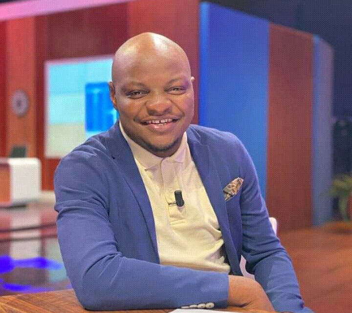

Willy Dumbo : l’humoriste qui fait rire l'Afrique et le Monde
Willy Dumbo, de son vrai nom Missinhoun Emmanuel Wilfried, est un humoriste, un chanteur et un
animateur télé ivoirien. Il est le présentateur de l’émission Willy à Midi ou WAM sur Life TV, où il
propose des sketchs, des parodies et des interviews décalées. Il est également connu pour ses
imitations du président Alassane Ouattara et pour ses chansons humoristiques comme Ziba Salsa ou On
est déjà né.
Un parcours atypique
Willy Dumbo est né en 1987 à koumassi, en Côte d'Ivoire. Il est le fils aîné d’une famille de trois
enfants. Il est ivoirien d’origine béninoise et vit en Côte d’Ivoire depuis son enfance. Il grandit
à Abidjan, dans le quartier Sicogi à Koumassi. Il fait ses études primaires et secondaires à
Abidjan, où il obtient son baccalauréat.
Contrairement à ce que l’on pourrait croire, Willy Dumbo n’a pas fait d’études d’art ou de
communication, mais de marine marchande. Il intègre l’école nationale de la marine marchande
ivoirienne, où il obtient le grade de lieutenant. Il refuse même une bourse d’études à l’étranger
pour suivre cette voie. Cependant, il ne renonce pas à sa passion pour le théâtre et la musique.
Dans les années 2000, il fait partie d’un groupe de musique zouglou appelé les Tchepos, avec lequel
il se produit dans des maquis et des cabarets. Il nourrit aussi le rêve de devenir réalisateur et
s’inspire des films de Nollywood. Il commence à faire des parodies et des imitations qu’il poste sur
les réseaux sociaux.
Une carrière fulgurante
C’est grâce à ses vidéos sur internet que Willy Dumbo se fait remarquer par le grand public. Ses
deux plus grands succès sont Les awards des nuls et Alloco yo, qui cumulent des milliers de vues. Il
se fait également connaître par sa capacité à imiter le président Alassane Ouattara, ce qui lui vaut
d’être invité à la finale de Miss Côte d’Ivoire en 2012, où il fait rire la première dame Dominique
Ouattara.
Willy Dumbo débute ensuite sa carrière d’animateur radio en 2012 sur Ivoire FM, où il anime
l’émission Les Matinales. En 2015, il devient chroniqueur dans l’émission Music Actu sur RTI2, puis
présente l’émission de divertissement Madame, Monsieur Bonsoir sur la même chaîne de 2017 à 2019. Il
devient également chroniqueur sur Trace FM, où il apporte une touche d’humour aux émissions
Génération 2.0 et Accusé levez-vous.
En 2020, Willy Dumbo rejoint l’équipe du Parlement du rire, une émission humoristique diffusée sur
Canal+ Afrique et animée par Mamane. Il y côtoie des humoristes renommés comme Michel Gohou,
Charlotte Ntamack ou Digbeu Cravate. La même année, il est recruté par Fabrice Sawegnon comme
animateur de l’émission Willy à Midi ou WAM sur Life TV, une chaîne de télévision généraliste lancée
en 2019. Dans cette émission, il propose des sketchs, des parodies et des interviews décalées avec
des personnalités du monde du spectacle, du sport ou de la politique.
Une touche musicale
Willy Dumbo n’a pas abandonné sa passion pour la musique. En 2017, il sort son premier single
intitulé Ziba Salsa, un titre humoristique qui mélange salsa et zouglou. Le clip fait le buzz sur
les réseaux sociaux et compte plus de deux millions de vues sur YouTube. Il sort ensuite d’autres
chansons comme Lève toi ou On est déjà né, en duo avec Petit Denis, un artiste zouglou. Il se
produit également sur scène lors de concerts ou de festivals.
Willy Dumbo est considéré comme l’un des humoristes les plus populaires et les plus talentueux de
Côte d’Ivoire. Il a reçu plusieurs prix et distinctions, comme le prix du meilleur humoriste
chanteur au Primud en 2018 ou le prix du meilleur animateur télé aux Africain Talent Awards en 2020.
Il a également été nommé pour le prix RFI Talents du Rire en 2020
@willyWilly Dumbo : l’humoriste qui fait rire la Côte d’Ivoire
Willy Dumbo, de son vrai nom Missinhoun Emmanuel Wilfried, est un humoriste, un chanteur et un
animateur télé ivoirien. Il est le présentateur de l’émission Willy à Midi ou WAM sur Life TV, où il
propose des sketchs, des parodies et des interviews décalées. Il est également connu pour ses
imitations du président Alassane Ouattara et pour ses chansons humoristiques comme Ziba Salsa ou On
est déjà né.
Un parcours atypique
Willy Dumbo est né en 1987 à Abomey, au Bénin. Il est le fils aîné d’une famille de trois enfants.
Il est ivoirien d’origine béninoise et vit en Côte d’Ivoire depuis son enfance. Il grandit à
Abidjan, dans le quartier Sicogi à Koumassi. Il fait ses études primaires et secondaires à Abidjan,
où il obtient son baccalauréat.
Contrairement à ce que l’on pourrait croire, Willy Dumbo n’a pas fait d’études d’art ou de
communication, mais de marine marchande. Il intègre l’école nationale de la marine marchande
ivoirienne, où il obtient le grade de lieutenant. Il refuse même une bourse d’études à l’étranger
pour suivre cette voie. Cependant, il ne renonce pas à sa passion pour le théâtre et la musique.
Dans les années 2000, il fait partie d’un groupe de musique zouglou appelé les Tchepos, avec lequel
il se produit dans des maquis et des cabarets. Il nourrit aussi le rêve de devenir réalisateur et
s’inspire des films de Nollywood. Il commence à faire des parodies et des imitations qu’il poste sur
les réseaux sociaux.
Une carrière fulgurante
C’est grâce à ses vidéos sur internet que Willy Dumbo se fait remarquer par le grand public. Ses
deux plus grands succès sont Les awards des nuls et Alloco yo, qui cumulent des milliers de vues. Il
se fait également connaître par sa capacité à imiter le président Alassane Ouattara, ce qui lui vaut
d’être invité à la finale de Miss Côte d’Ivoire en 2012, où il fait rire la première dame Dominique
Ouattara.
Willy Dumbo débute ensuite sa carrière d’animateur radio en 2012 sur Ivoire FM, où il anime
l’émission Les Matinales. En 2015, il devient chroniqueur dans l’émission Music Actu sur RTI2, puis
présente l’émission de divertissement Madame, Monsieur Bonsoir sur la même chaîne de 2017 à 2019. Il
devient également chroniqueur sur Trace FM, où il apporte une touche d’humour aux émissions
Génération 2.0 et Accusé levez-vous.
En 2020, Willy Dumbo rejoint l’équipe du Parlement du rire, une émission humoristique diffusée sur
Canal+ Afrique et animée par Mamane. Il y côtoie des humoristes renommés comme Michel Gohou,
Charlotte Ntamack ou Digbeu Cravate. La même année, il est recruté par Fabrice Sawegnon comme
animateur de l’émission Willy à Midi ou WAM sur Life TV, une chaîne de télévision généraliste lancée
en 2019. Dans cette émission, il propose des sketchs, des parodies et des interviews décalées avec
des personnalités du monde du spectacle, du sport ou de la politique.
Une touche musicale
Willy Dumbo n’a pas abandonné sa passion pour la musique. En 2017, il sort son premier single
intitulé Ziba Salsa, un titre humoristique qui mélange salsa et zouglou. Le clip fait le buzz sur
les réseaux sociaux et compte plus de deux millions de vues sur YouTube. Il sort ensuite d’autres
chansons comme Lève toi ou On est déjà né, en duo avec Petit Denis, un artiste zouglou. Il se
produit également sur scène lors de concerts ou de festivals.
Willy Dumbo est considéré comme l’un des humoristes les plus populaires et les plus talentueux de
Côte d’Ivoire. Il a reçu plusieurs prix et distinctions, comme le prix du meilleur humoriste
chanteur au Primud en 2018 ou le prix du meilleur animateur télé aux Africain Talent Awards en 2020.
Il a également été nommé pour le prix RFI Talents du Rire en 2020
Willy Dumbo l'Afrique est fière de vous!
 Celebrate Our
Africa
Celebrate Our
Africa